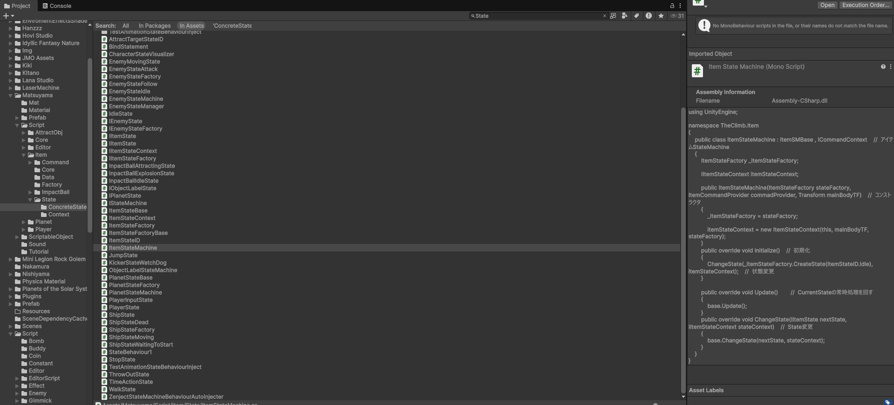
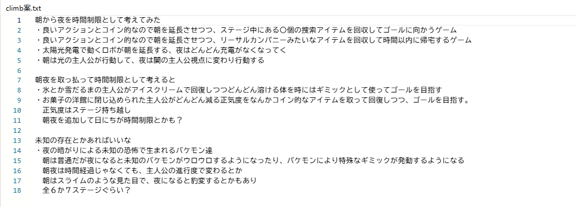
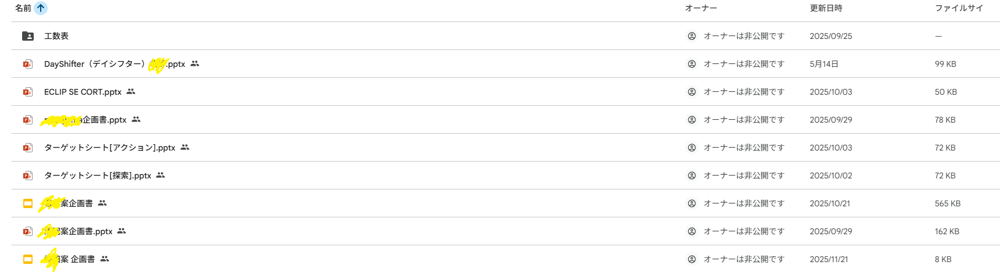
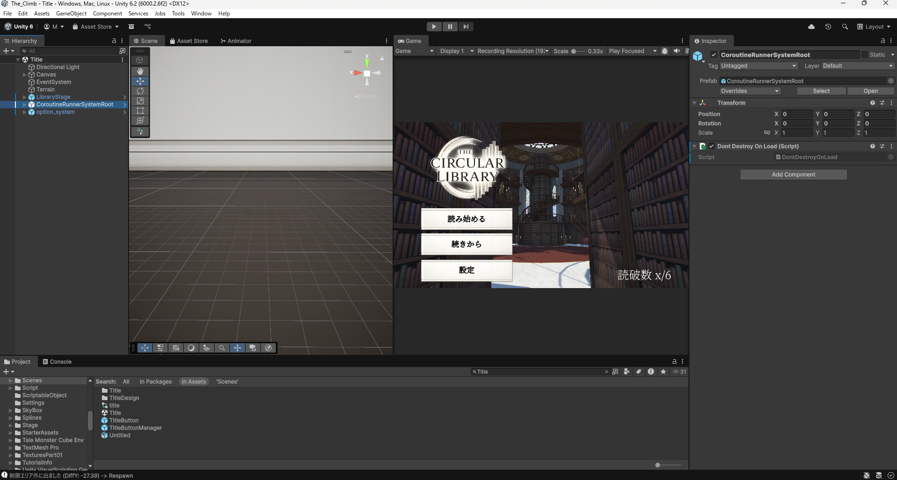

2作品目「TheCircularLibraly」
内容:ステージ攻略アクション
制作時期:2年次6月 ~ 3年次3月
制作人数:8人
役割:プログラマー
担当箇所:敵挙動・特殊アクション・ステージギミック

プレイヤーのぶっ飛び能力を実装する時は、
能力を使っていて楽しいか、手触り感がいいかを深く追求しました。
またプログラマとして変に拘ってしまい、
必要以上に色んな構造を学んで使い、複雑な構造を乱立しました。


立案していざ作ってみると、あまりに普通のアクションゲームになったので
チームで話し合い企画を練り直すことになり、ゲームも作り直しになったので
工数が短くなった分、スピード感をもってメンバー同士協力して頑張って実装しました。
企画や仕様の変更に対応していくうちに、プレイヤーの基本的な移動処理と
ぶっ飛び能力の処理の相性が悪くなり、工数が少ない中ぶっ飛び処理を修正することに
なったので、その修正はとても気を張って頑張りました。

変に拘って作り上げたコード自体は複雑すぎてBadだったのですが、
結果として様々なコードを学ぶことができて処理の選択肢が
広がったことはためになりました。
これはこの制作だけではないのですが、企画が変更になったり
深刻なバグができたりしても、メンバー同士爆笑しながら完成に
持っていけたのは良かったです。
個人制作と並行していたので、毎日
「個人制作の方の処理で作り替えた方がいいな！」、「チーム制作のコードの方がいいな！」
となりコードに拘り過ぎて、自分の試してみたいアイデアを試せなかったりしたので
エディタの操作やタイピングの速度を上げてもっとたくさん実装したかったです。
またプログラマーではありながらも、ゲームデザインにも責任をちゃんともって
面白いアイデアを浮いた時間で実装して、少しでも面白くしたいなと思いました。